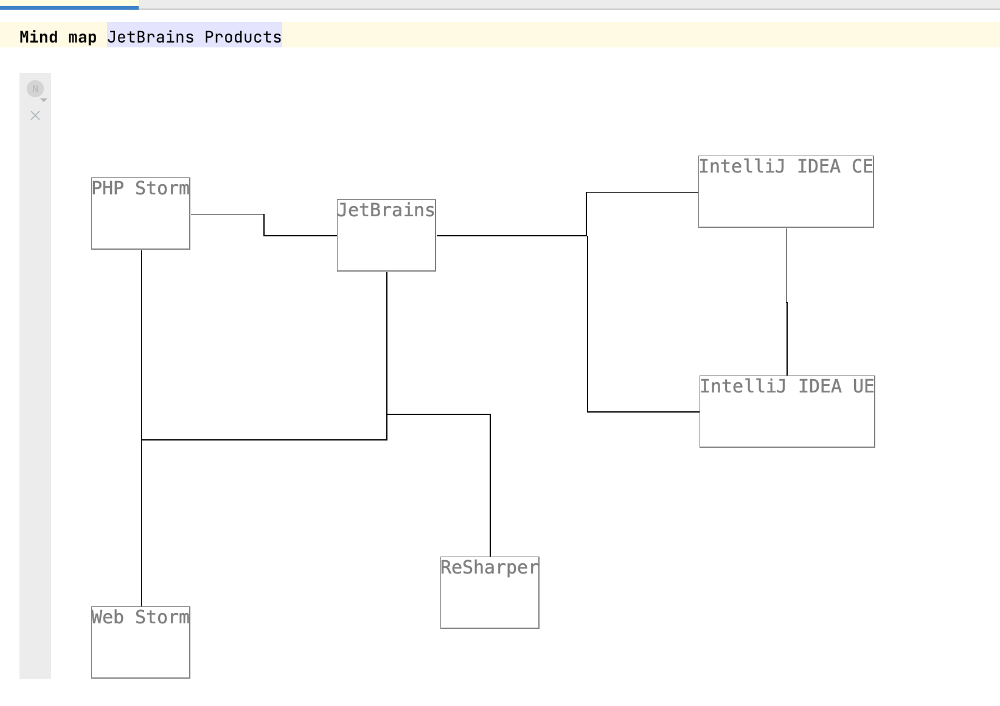

UI Patterns and Anti patterns¶
Go through your editors and check the following list.
Texts are readable.
The contrast ratio between the background color and the foreground text color should be at least 4.5:1 article. Contrast checkers can also help you. Here are some colors with a high contrast:
{kind=link}
When using a gray scale color, make sure that the text color doesn’t exceed 48% brightness (source). Make also sure to provide different colors for different color schemes (e.g. darcula theme vs light theme).
Bad example #1
{kind=link}
Bad example #2

Bold and underline aren’t used together.
This is an anti-pattern. More information can be found in this article. MPS related summary:
- Bold
- important phrases
- highlighting keywords
- Italic/Emphasis
- Used to highlight quotes (some use blockquotes).
- Foreign words.
- Underline
- Used for links
- CAPS
- Used for acronyms
You use buttons correctly.
(Swing) Buttons use appropriate symbols/text to make clear what they do. Buttons can alse be used as up and down keys. Buttons can also be hidden to not disrupt the text editing:

Add option to hide buttons (checkbox, editor hint, action, etc.).
Clickable elements appear clickable.
When elements are clickable, they should appear clickable: They should use an indicator or different style (e.g. underlines and blue or styled like a button).
You align collections when possible.
Alignment is an important aspect in design (introduction). Use vertical grids instead of vertical collections to align cells nicely. It is also very important for readability.
You use color for emphasis and to convey information.
Not only bold font can be used to emphasize words but also color. Make sure that the used color is correctly associated by the user.
Bad example
Greyscale editor + grey is associated with disabled content/meta information such as comments. 
{kind=link}
Good example
{kind=link}
Color is used to distinguish different language features: BLUE for numbers, lila/green for CONSTANTS.
You use labels in a consistent way.
Labels should be used consistently in the design (e.g. always bold, colon after label), the same goes for key value pairs. There is no best practise for the separation between label and text. Some ideas and common guidelines can be found here.
{kind=link}
The context of UI elements is consistent.
Counterexample: There are 3 buttons next to each other that look similar: One opens an external documentation, the other navigates to a root node and the third one undos a change. This could be confusing and frustrating for the user.
A default empty statement exists.
There should always be a default concept that acts as an empty line or empty text. It should be editable and support autocompletion. They should have an indicator that they are editable. The easist way is to provide a placeholder value.
Bad example

Different groups are distinguishable from each other.
Groups can be separated for example by whitespace, by drawing a border (box) or drawing brackets around the content.
You emphasize non-standard operations/literals.
Emphasize special operations or literals to make it clear that they are not. Another good examples in baselanguage are extension methods.
{kind=link}
Enough paddings surround elements.
Make sure there is enough space between the content and its border (padding) otherwhise the editor looks too packed. More information from a design perspective can be found here.
You use existing stylesheets.
For baselanguage there is BaseLanguageStyle. You can search globally for instances of Stylesheet to find more styles.
The font size conveys hierarchy.
More information can be found in this beginner’s guide to typographic hierarchy.
Example hierarchy (source: Font Size And Weight Matters) : 
You use the full window with for your editor.
Often times the space in editor components is not good used and a lot of space is left empty on the right side of the window. This can be improved by using multiple groups next to each other or using the right hand side of the screen for some sort of legend for graphics or meta information about the (root) node (e.g. code review).
Headers follow general UI principles.
The following principles should be followed:
- hierarchical relationship of ideas
- consistency
- readability
- specificity
More information can be found in Technical writing essentials - Headings.
Headers are distinguishable from content.
Bad example
{kind=link}
The header and the start of the child concepts use bold font and the same text. In this example the text “Output” is redundant. The header should be larger in size.
A common layout is header-input-output: At the top is the header, then there are the inputs/declarations, followed by the output/body. Make sure to separated this three groups in some ways (such as horizontal lines or empty lines).
Mixed example
{kind=link}
Lines aren’t too thick and not textual.
A good maximum width for borders and other lines is 3 pixels. This is just a rough guideline but with thicker lines the design becomes overwhelming.
Bad example
{kind=link}
You don’t emphasize meta/not important information.
Good example
{kind=link}
A smaller font, light gray color or maybe a different font seems to work well. Inherited value can also be shown this way: display them as placeholder values in a light gray color. Don’t emphasize comments by making them bold or stand out in any way.
Bad example

The reflective editor is never shown.
The reflective editor provides a default editor for nodes. The editor is only readonly and should only be used for debugging purposes.
Bad example
{kind=link}
You use The right form of projection for the task in the editor.
The right projections are used (text, tables, diagrams..) and different kind of projections are provided when necessary (switchable by menu or editor hints).
Example: multiple projections
{kind=link}
You didn’t forget to enable anti aliasing for custom swing components.
When you create a custom component and have a paint-Method, call EditorComponent.turnOnAliasingIfPossible to enable anti aliasing. More information can be found in the Java documentation.
All usages of symbols are clear.
When using symbols, make sure that the user understands what it means. A Plus symbol might be easy to understand (add, increase), a complex shape that is not usuable used might be not. Common icons can be found for example in the fontawesome icon pack.
You abbreviate often used words and symbol.
Abbreviate words that are often used in the editor or use symbols. Examples:
- The Letter “m” or a red star * is often used to mark a field as mandatory.
- The plus sign ⊕ is used to indicate an “add” action.